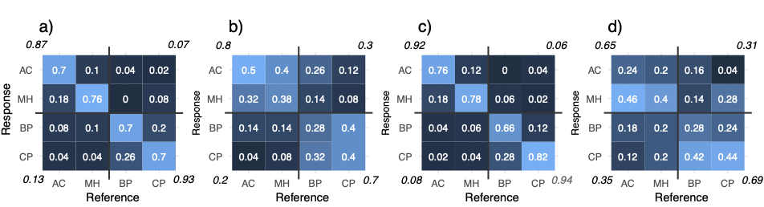

Online recognition of concert hall acoustics listening experiment
Last September (2020) we published the article “Recognizing individual concert halls is difficult when listening to the acoustics with different musical passages”. The title already tells a lot of this experiment, where the subjects were required to recognize halls just by listening to the acoustics of the halls, but in cases where the sounds (i.e. excitation of the hall acoustics) were exactly the same, or somewhat different (see the article for more details.). The following figure summarises the main results:

FIG. 7. (Color online) Confusion matrices (or “error” matrices) where each cell depicts the proportions (between 0 and 1) of responses given in the matching task. For example, in (a) whenever a reference auralization corresponded to AC, 70% of the responses were correct, while in 18% the response was incorrectly MH. The values in the corners present the results of the reclassification of the correct responses with horizontal and vertical lines across the matrices indicating the grouping (i.e., AC–MH vs BP–CP, see text for details). (a) Beethoven “same” condition; (b) Beethoven “different” condition; (c) violin “same” condition; (d) violin “different” condition. Color range is scaled from 0 (dark blue) to 1 (white).
Anyway, for this work I also experimented with RShiny to see if it can be used for making online listening experiments. Originally the idea was only to facilitate the review process, so that, the reviewers could go and have a listen for themselves to get at better idea of the experiment and what was being listened to. Here is link to this online test.
However, we were also fortunate to publish another article shortly after: Perception of loudness and envelopment for different orchestral dynamics. And all together these studies gained some momentum and was noted with a press release and was spread out more widely.
Unfortunately, I did realize that the online test is overly long for most people to finish in realistic time, and I suspect that there have been quite a lot of people who have started the test but not completed. Nevertheless, there are now 39 people who have completed the online test and I will shortly look at the results here.(Note, that analyzing this type if data in R was already discussed in the previous post, so here, I will just cover the main results of the online listening experiment.
Leave a comment:
Antti Kuusinen
Postdoctoral Researcher
My research interests include the human perception of speech, music and noise in reverberant spaces.